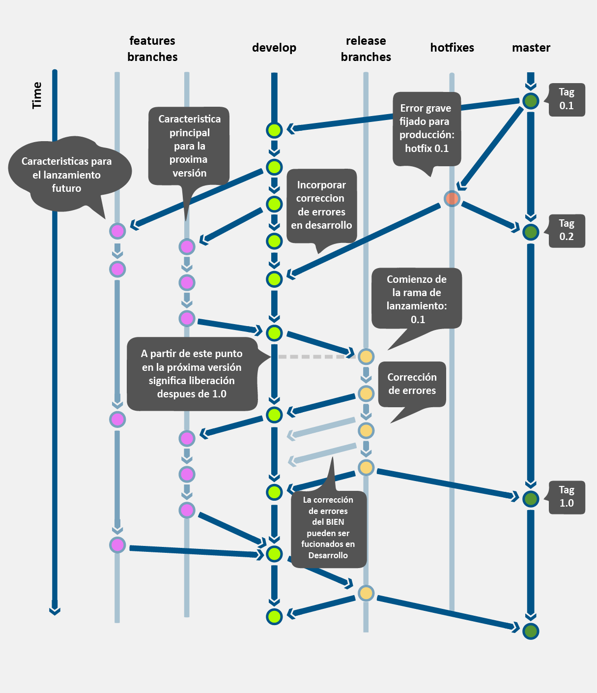
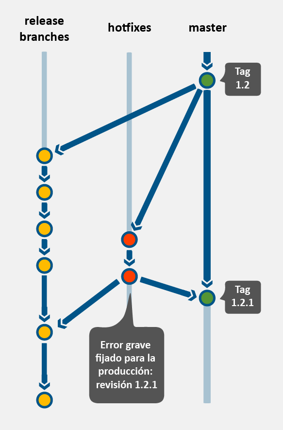

Directrices Git¶
Introducción¶
Los lineamietos expuestos aquí son una extensión de A successful Git branching model
Propósito¶
Explicar el modelo de desarrollo y control de versión de código de los sistemas desarrollados en la DADS con la herramienta Git.
Alcance¶
El presente lineamiento tiene por alcance describir las políticas y lineamientos de trabajo que deberá de seguir un equipo de desarrollo de software dentro de la DADS y que esté utilizando la herramienta para la administración y versionamiento de código Git. Los conceptos, procesos, comandos y otros elementos que pertenecen propiamente a la tecnología Git están fuera del alcance del presente documento.
Panorama¶
El documento está compuesto por dos secciones: Modelo de Desarrollo y Descripción de Ramas. En la primera se explica el modelo general que utilizan los equipos de desarrollo de software dentro de la DADS, conceptos generales y consideraciones que se deben de tomar en cuenta para ejecutar de manera adecuada el modelo de desarrollo. En la segunda sección se describen las ramas empleadas para cubrir el ciclo de desarrollo de un sistema de software, sus políticas y reglas que la gobiernan, así como también las prácticas recomendadas de uso.
Modelo de Desarrollo¶
Introducción¶
El modelo de desarrollo explicado aquí puede variar de acuerdo a las necesidades específicas de cada proyecto, sin embargo el modelo general de desarrollo considera diferentes flujos trabajo que pueden adaptarse a las necesidades específicas. El modelo definido aquí aplica sólo para equipos que se encuentren gestionando su código con la herramienta Git.
Elementos del Modelo de Desarrollo¶
El modelo consta de la definición de los siguientes elementos:
- Roles
- Actividades
- Ramas principales
Roles¶
El modelo de desarrollo involucra dos roles; Master y Developer, mismos que se describen a continuación:
Master
Principalmente, este rol será el encargo de llevar a cabo la integración del sistema, además de las siguientes responsabilidades:
- Llevar a cabo las operaciones de integración entre la rama origin/develop y origin/master.
- Verificar que los números de versiones en la rama master respetan el versionamiento Semantic Versioning 2.0.0 [SEMANTIC2.0]
- Identificar inconsistencias entre la nueva versión y anteriores.
Developer
En cada proyecto se puede contar con 1 o más roles de este tipo y sus principales actividades son:
- Participar en la construcción de nuevas funcionalidades sobre un sistema de software.
- Construir software de calidad de acuerdo a los estándares definidos en la organización.
- Participar en las tareas de integración cuando estas sean solicitadas por el rol master.
Actividades¶
Las actividades que se llevan a cabo en el modelo de desarrollo se ilustran en la siguiente gráfica:

Meta Información para cada Rama¶
Con la finalidad de comprender de manera precisa el estudio de las diferentes ramas de trabajo utilizados en la DADS, a continuación se presenta la descripción de la meta-información que define a cada una de las ramas y que será utilizado a lo largo de este documento para describirla.
| Metadato | Descripción | | --- | --- | | Descripción | Descripción básica de la rama en cuestión. | | Rama de la que bifurca | Nombre de la rama que bifurcó. | | Rama con la que se une | Nombre de la rama a la que se une cuando se ejecuta una operación de tipo merge. | | Convención de nombrado | Convención de nombrado que aplica para la rama. | | Lineamiento | Consideraciones para el buen uso de la Rama. | | Diagrama | Diagrama explicativo sobre el uso de la rama. | | Comandos | Comandos sugeridos para la creación, modificación, unión y eliminación de la rama. |
Rama Master¶
Descripción¶
La rama **master, **por convención, será la rama principal del proyecto. En esta rama se encuentran las versiones productivas del sistema y que se han liberado a producción.
Rama de la que bifurca¶
Ninguna
Rama con la que se une¶
Ninguna
Convención de nombrado¶
Esta rama siempre se llama master
Lineamientos¶
- No está permitido subir “código roto” a la rama master.
- El código que se suba a master deberá de ser cuidadosamente probado antes de ser integrado; se sugiere utilizar el branch release antes de que una nueva liberación se lleve a cabo a la rama master.
- Sólo el rol master puede ejecutar la operación de
push/mergea esta rama. - Esta rama nunca se deberá de borrar.
Diagrama¶

Comandos¶
[NO APLICA]
Rama Develop¶
Descripción¶
La rama develop, por convención, será la rama secundaria del proyecto. En esta rama, el equipo de desarrollo se encuentra trabajando día con día una nueva versión del sistema.
Rama de la que bifurca¶
master
Rama con la que se une¶
master
Convención de nombrado¶
Siempre se llamará develop
Lineamientos¶
Diagrama¶
Comandos¶
[NO APLICA]
Rama Feature¶
Descripción¶
La rama de características “feature” es utilizada para desarrollar nuevas características o funcionalidades que vendrán en las próximas o futuras entregas. Esta rama se crea cuando se comienza a desarrollar una nueva característica de la cual se desconoce la fecha de entrega. La esencia de esta rama es que exista durante el periodo de tiempo en que tome desarrollar la nueva característica. Eventualmente, esta rama se unirá a la rama de desarrollo develop (para agregar de manera definitiva la nueva característica en la próxima entrega) o se eliminará (en caso de que la nueva característica no cumpla con los objetivos deseados).
Rama de la que bifurca¶
develop
Rama con la que se une¶
develop
Convención de nombrado¶
El nombrado de esta rama se deberá de apegar a lo establecido en [AGIS] y la propuesta en esta sección:
Nomenclatura Adicional:feature-*
Ejemplo:
- feature-seguridad
- feature-carrusel
Lineamientos¶
- Sólo existe en el repositorio local, nunca en el remoto origin
Diagrama¶

Comandos¶
Crear una rama feature a partir de la rama develop se deberá de hacer lo siguiente:
git checkout -b feature-seguridad develop
Una vez que se a trabajo en la nueva rama, para actualizar los cambios en la rama develop primero tenemos que regresar a la rama develop y partir de allí llevar a cabo la operación merge:
git checkout develop
Unir las modificaciones hechas en la rama feature dentro de la rama develop:
git merge --no-ff feature-seguridad
A continuación, se deberá de borrar la rama feature-seguridad:
git branch -d feature-seguridad
Finalmente, se envian los cambios a la rama remota develop
git push origin develop
Rama Release¶
Descripción¶
La rama “release” se debe utilizar para la preparación de una nueva entrega en el ambiente de producción. Esta rama es útil para corregir pequeños defectos y preparar los metadatos que deberá llevar la próxima entrega (número de versión, fecha de compilación, etc.). El beneficio de tener una rama de entrega release radica en el hecho de que podemos conservar la rama develop limpia y lista para recibir nuevas versiones que se tendrán que integrar a la rama master. Adicionalmente, la rama release será utilizada por el equipo de QA para probar la entrega antes de que esta llegue a producción.
Rama de la que bifurca¶
develop
Rama con la que se une¶
developmaster
Convención de nombrado¶
El nombrado de esta rama se deberá de apegar a lo establecido en [AGIS] y la propuesta en esta sección:
Nomenclatura obligatoria: release-*
Ejemplo:
release-seguridadrelease-carrusel
Lineamientos¶
- El mejor momento para crear una ramificación de develop es cuando el desarrollo refleja el estado deseado de una nueva entrega.
- Todas las funcionalidades o características que se esperan mostrar en la próxima entrega deberán de unirse a la rama de develop.
- Es exactamente al comienzo de la creación de esta rama en que se asigna una versión. Es hasta ese momento que la rama develop refleja los cambios para la siguiente entrega, pero no es claro si esa nueva entrega eventualmente se convertirá en la versión 0.3 o 1.0. La notación para el versionamiento de código es la descrita en [**SEMANTIC2.0]**
Diagrama¶

Comandos¶
Creación de la rama de entrega release-1.2
git checkout -b release-1.2 develop
Una vez que se a trabajo en la nueva rama, para actualizar los cambios en la rama develop primero tenemos que regresar a la rama develop y partir de allí llevar a cabo una unión (merge):
./bump-version.sh 1.2
Unir las modificaciones hechas en la rama feature dentro de la rama develop:
git commit -a -m "Bumped version number to 1.2"
Cambiarnos a la rama de master:
git checkout master
Unir los cambios de la rama release1.2 con master:
git merge –no-ff reléase-1.2
Enviar los cambios a la rama develop
git tag –a 1.2
Rama Hotfixes¶
Descripción¶
Una vez que se ha llevado a cabo una liberación a la rama master y esta versión forma parte del ambiente productivo del cliente, es posible que exista el reporte de nuevos bugs encontrados por los usuarios finales. Para corregir estos bugs y desplegar una nueva versión en el ambiente productivo, es que se utilizará la rama hotfixe, que ayudará a corregir errores que surgan en el ambiente de producción.
Rama de la que bifurca¶
master
Rama con la que se une¶
master
develop
Convención de nombrado¶
hotfix-[modulo-version]
Ejemplo:
hotfix-seguridad-v1.1.1hotfix-carrusel-v1.1.1
Lineamientos¶
- La rama
hotfixessólo existe mientras se está corriguiendo errores. - La rama
hotfixesexiste en el repositorio remoto. - La rama
hotfixeses creada y eliminada por el rol master. - La operación merge con la rama
mastery la ramadevelopsólo la pude llevar a cabo el rol master.
Si existe una rama release cuando ocurre un bug en producción, entonces:
- Los bugs corregidos en la rama
hotfixse deberán de unir a la ramareleasey no adevelop; la unión condevelopocurre cuando la ramareleaseestá lista para producción. Si el trabajo en la ramadeveloprequiere de manera inmediata el cambio realizado en la ramahotfix, entonces se puede lleva a cabo la operación merge dentro de la ramadevelop;
Diagrama¶
Comandos¶
Crear una rama hotfix¶
Las ramas hotfix son creados desde la rama master. Por ejemplo, si la versión que se liberó a producción fue la 1.2.0, y se detectan errores durante el uso del sistema y los cambios en la rama develop no son estables, entonces se pude crear una rama hotfix para atender los bugs y volver a liberar a producción.
git checkout -b hotfix-1.2.1 master
./bum-version.sh 1.2.1
git commit -a -m "Versión modificada a 1.2.1"
Durante este paso se deberán de corregir los bugs en uno o varios commits:
git commit -m "Resolviendo bugs de producción"
Finalmente, se lleva a cabo un merge tanto a la rama master como a la rama develop,
Operación merge en la rama master:
git checkout master
git merge --no-ff hotfix-1.2.1
Nota Se puden utilizar las opciones-s o -u para firmar nuestro tag.
Operación merge en la rama develop:
git checkout develop
git merge --no-ff hotfix-1.2.1
Nota en caso que exista una rama de release los cambios en la rama hotfix deberán de unirse también en la rama release, en lugar de develop.
Eliminación de la rama temporal:
git branch -d hotfix-1.2.1
Lineamientos Generales¶
Generales¶
En general, siempre hay que considerar los siguientes elementos:
- Para comenzar a trabajar siempre hay que crear un branch a partir de origin develop.
- Probar el software antes de hacer un push al repositorio remoto origin develp.
- En caso que esté trabajando en una nueva funcionalidad y decides que no formará parte de la rama develop, entonces, para comenzar a trabajar sobre otra nueva funcionalidad siempre deberás de hacer un rebase a develop.
- Llevar a cabo la operación checkout a develop, para asegurarte que te encuentras trabajando con la última versión del proyecto en fase de desarrollo.
- Siempre prueba tu código una y otra vez.
- Los proyectos no deberán de ser creados por los integrantes del repositorio gitlab, únicamente el administrador será el único facultado en llevar a cabo este tipo de acciones.
Particulares¶
Los siguiente lineamientos aplican a todas la ramas:
- Tanto el nombre de los directorios, como el de los productos de trabajo que están contenidos en ellos no incluirán acentos, ni caracteres especiales, ni espacios.
- El código contenido en cualquier rama deberá ser versionado haciendo uso del juego de caracteres UTF-8.
- Salvo imágenes, las ramas sólo podrán contener código fuente. Ningún otro archivo de tipo binario deberá ser considerado para versionamiento en la rama de código. En caso que sea necesario subir imágenes, estas deberán de ser codificadas en base64.
- Efectuar el push sólo para las unidades funcionales completas.
- Efectuar push de manera frecuente. De ser posible, cada día, siempre y cuando esto no entre en conflicto con la regla anterior.
- Para push deberá generarse un comentario amplio y descriptivo que incluya el detalle de aquello que se está subiendo en el repositorio Git.
- Generar respaldos de la base de datos Git en una base mensual.
- No estará permitido efectuar bloqueos, a menos que esto sea justificado plenamente.
Importantes¶
Existen dos cosas que nunca se deberá de llevar a cabo en Git:
- NUNCA forzar una operación push: Si te encuentras en una situación donde tus cambios no puedas ser enviados al upstream, debido a que algo está mal.
- NUNCA ejecutes la operación rebase a una rama a la que le has aplicado la operación push o pull. Esto puede generar la duplicidad de commits a un repositorio compartido.